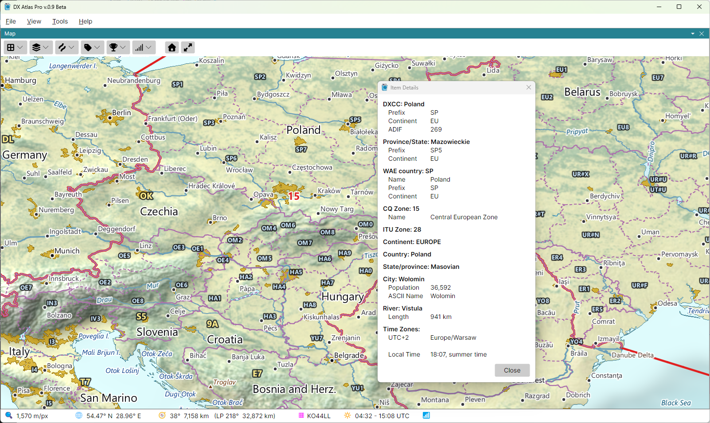

Item Details
The Item Details window lists what is at a point of the map: the country, the state or province, the city, island, sea or lake, and, with the Amateur Radio functions on, the DXCC entity, its call area and province, and the zones, each with its attributes. The time zones and the local time at the point come last.

Opening the Window
- Ctrl-click the map to list everything at the point clicked;
- click a label to list the item the label names, as if you clicked its place on the map;
- right-click the map and pick Show Details for ...: the menu item names the label under the mouse, or says Point where there is no label;
- in the Lists Panel, Ctrl-click a row, or right-click it and pick Show Details, to list that row's item. A province or call area is listed with its DXCC entity above it.
The keys of the Ctrl-click can be changed in the Mouse Clicks section of the Settings Dialog.
What the Window Shows
Each item has a heading - its type and name, such as Country: Japan - and its attributes indented under it. The attributes depend on the item: an island lists its area, a city its population, a DXCC entity its prefix, zones, continent and ADIF number. A detail that another item already gives is not repeated: the zones are listed once, under their own headings.
The local time is given for the moment the Clock panel shows, with summer time taken into account, so with a fixed time on the clock you can see the local time anywhere at any moment since 1945.
The position, grid square, bearing, distance and sunrise and sunset of the point are not listed: the Status Bar shows them as you move the mouse.
Closing the Window
The window stays open, and each new click fills it again. To close it, click its Close button, press Escape, or click anywhere in the main window; that click does nothing else.